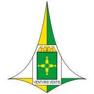

Brasão

- Status
- revisao_pendente
- Commons
- File:Brasão do Distrito Federal (Brasil).svg
- Autor
- tonyjeff
- Licença
- Public domain
- Atribuição
- não/indeterminada
- Confiança
- 100
1 municípios; 2 candidatos pendentes; 0 aprovados; 0 não encontrados; 0 exceções.
Nenhum item nesta página está aprovado automaticamente.
5300108